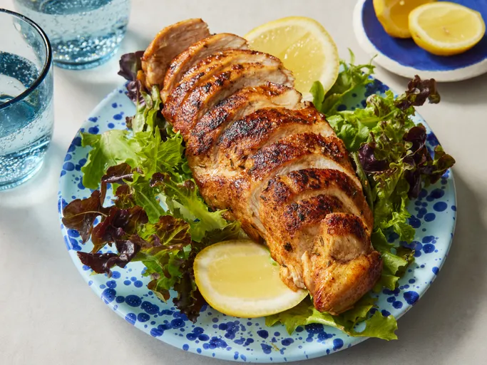

Serves 2
Blackened chicken is quick and easy to make at home. Adjust the spices in this recipe to suit your taste. This is great on a summer’s day with fresh corn and mashed potatoes.
Nutritional Information (per serving)
| Calories |
Carbs |
Protein |
Fat |
| 135kcal |
1g |
25g |
3g |
- cooking spray
- ½ teaspoon paprika
- ¼ teaspoon cayenne pepper
- ¼ teaspoon ground cumin
- ¼ teaspoon dried thyme
- ⅛ teaspoon onion powder
- ⅛ teaspoon ground white pepper
- ⅛ teaspoon salt
- 2 skinless, boneless chicken breast halves
- Gather all ingredients. Preheat the oven to 175 degrees C. Spray a baking sheet with cooking spray.
- Heat a cast iron skillet over high heat until it is smoking hot, about 3 to 5 minutes.
- While the skillet is heating, mix paprika, cayenne, cumin, thyme, onion powder, white pepper, and salt together in a small bowl.
- Spray chicken breasts on both sides with cooking spray, then coat evenly with spice mixture.
- Place chicken in the hot pan and cook for 1 minute. Turn, and cook 1 minute on other side. Transfer chicken to the prepared baking sheet.
- Bake in the preheated oven until chicken is no longer pink in the center and the juices run clear, about 5 to 10 minutes. An instant-read thermometer inserted into the center should read at least 165 degrees F (74 degrees C).
- Serve and enjoy!